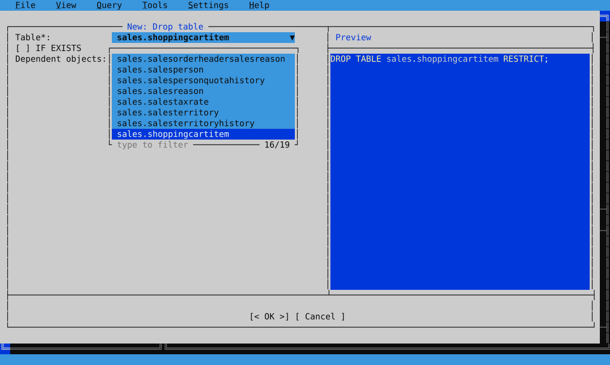
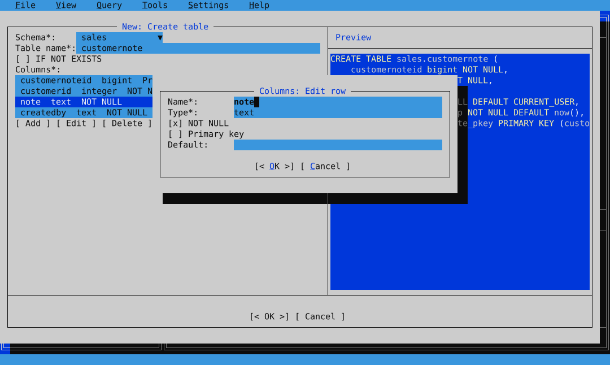
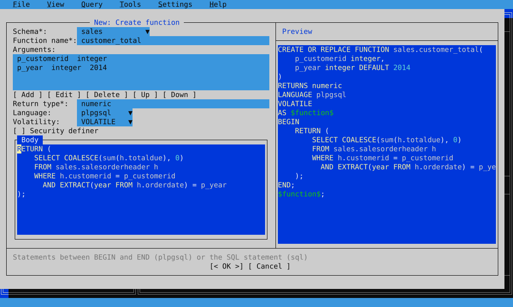

Developer templates (F7)
A developer template is a .pgtemplate file: a parameter declaration (TOML) and a
Jinja body. F7 in a query tab renders one from a generated form and inserts the SQL at the cursor. It is
never executed. Templates are edited with the template editor or any text
editor.
Installing the templates
Templates are read only from the templates folder. The built-in ones are embedded in the
executable and are installed with pgtc --setup, pgtc --install-templates or
.
- If the folder exists, installing asks before overwriting the built-in files (same path). Files under other paths are never touched; nothing is ever deleted.
- shows the path.
Using a template
F7 () in a connected query tab: choose a template, fill in the form, OK (or Ctrl+Enter from any field, where the terminal reports it). The SQL replaces the selection or goes in at the cursor.
- Choice lists are read on the tab's own session, and the template is resolved and rendered for that server's
server_version_num. - F7 is refused while the session is busy: a running statement, a paused result, an export.
The picker

description.- The folder is scanned each time the picker opens.
- Alt+S focuses Search: a case-insensitive substring match on name, description and path.
- file name (error): the header does not parse; the message is in the description line.
- file name (not for this server version): the template exists only in version folders newer than the tab's server.

drop in Search.The built-in templates
| Section | Templates |
|---|---|
| Functions | Create function, Create procedure, Drop function, Drop procedure |
| Indexes | Create index (incl. CONCURRENTLY, NULLS NOT DISTINCT, WHERE), Drop index |
| Roles | Create role, Drop role (optionally REASSIGN OWNED / DROP OWNED first — current database only) |
| Schemas | Create schema, Drop schema |
| Sequences | Create sequence, Drop sequence |
| Tables | Create table, Drop table |
| Triggers | Create trigger with function, Drop trigger |
| Types | Create enum type, Create domain, Drop type, Drop domain |
| Views | Create view, Create materialized view, Drop view, Drop materialized view |
Every DROP template has IF EXISTS (default off) and, except Drop role,
RESTRICT (default) / CASCADE.
The form

*marks arequiredparameter; the line above the buttons is the focused parameter'shelp.- If validation or rendering fails, the preview shows the error and OK inserts nothing.
- An
identifieris typed unquoted (at most 63 bytes); the body quotes it. Anumbermust parse as one. - On a narrow terminal the preview is below the fields.
Choice lists read from the catalogs

- One catalog query per such parameter runs on the tab's session when the form opens (loading… until the
rows arrive). The queries are listed under
source. - They run inside the tab's open transaction. In an aborted transaction each list shows error: …;
ROLLBACKfirst.
Defaults from the tree's selection
If the object selected in the object tree is on the same server and database as the tab, choice parameters with a
built-in source start with it: its schema for schemas; a table, partition or foreign table
for tables; a trigger (with its table) for triggers; a role for roles (only the
server has to match).
Lists: columns, arguments, labels

list parameter.Enter on a row edits it. The row dialog validates its fields like the form. Row order is the iteration
order of the body's {% for %} loop.
SQL boxes

sql box with fill = true.A sql parameter is a SQL editor with the usual editor keys and
autocomplete; its text reaches the body verbatim. Tab leaves the
box; Esc closes the autocomplete popup first.
Writing your own templates
The template editor () writes and validates the file. The rest of this page is the file's specification.
Where the files go
| Platform | Templates folder |
|---|---|
| Linux | ~/.local/share/pgtc/developer_templates |
| macOS | ~/Library/Application Support/pgtc/developer_templates |
| Windows | %APPDATA%\pgtc\developer_templates |
developer_templates/
default/ every server version
Tables/
table.pgtemplate
Our team/ your own section
audit_table.pgtemplate
12_plus/ overrides for PostgreSQL 12 and newer
Triggers/
trigger.pgtemplate- First level: a version folder,
defaultorN_plus; other directories there are ignored. - Below it: the sections, which can be nested. Only
*.pgtemplatefiles are read. - A template is identified by its path below the version folder. pgtc takes the file from the
N_plusfolder with the highest N ≤ the server's major version, else fromdefault. For small differences use a feature test instead.
Installing the templates again overwrites the built-in files. Save a changed built-in template under another file name (the editor warns).
The file
UTF-8. The first line is +++; a second +++ line separates the TOML header from the Jinja
body.
+++
name = "Create lookup table"
description = "A code / name table with our standard columns"
[[param]]
name = "schema"
label = "Schema"
type = "choice"
source = "schemas"
default = "public"
required = true
[[param]]
name = "name"
label = "Table name"
type = "identifier"
required = true
help = "Singular, lower case: country, orderstatus"
[[param]]
name = "code_length"
label = "Length of the code"
type = "number"
default = "10"
[[param]]
name = "with_audit"
label = "Audit columns (modifiedby, modifieddate)"
type = "bool"
+++
CREATE TABLE {{ schema|ident }}.{{ name|ident }} (
code varchar({{ code_length }}) NOT NULL,
name text NOT NULL,
{% if with_audit %}
modifiedby text NOT NULL DEFAULT CURRENT_USER,
modifieddate timestamp NOT NULL DEFAULT now(),
{% endif %}
CONSTRAINT {{ (name ~ "_pkey")|ident }} PRIMARY KEY (code)
);
default/Our team/lookup_table.pgtemplate.
The header
TOML. An unknown key is an error: the template is listed as (error).
| Key | Meaning |
|---|---|
name | Label in the picker. Absent or blank: the file name without extension. |
description | One line under the picker's tree. |
[[param]] | One table per parameter, in form order. |
Keys of [[param]]:
| Key | Meaning |
|---|---|
name | Required. The variable in the body. Letters, digits, _; unique per level. |
type | Required. See below. |
label | Field label. Default: name. |
required | true: an empty value fails validation. |
default | Initial value: a string (a number is accepted); true for a bool. |
help | Hint shown while the field has the focus. |
Parameter types
type | Additional keys | Value in the body |
|---|---|---|
text | String, as typed. | |
identifier | The unquoted identifier (at most 63 bytes); quote it with |ident. | |
number | Integer or float (a string inside a list row). | |
bool | Boolean. | |
choice | Exactly one of options = ["a", "b"], source = "tables", query = "SELECT …" | String, or an object for a schema-qualified source (below). |
sql | fill = true: the box takes the form's free rows (not in a list row); otherwise 5 rows | String, with its line breaks. |
list | [[param.fields]]: the fields of a row, declared like [[param]]; no nested lists | Sequence of maps: {% for r in x %}{{ r.field }}{% endfor %}. |
Choice lists from the catalogs: source
source | Rows | {{ value|ident }} |
|---|---|---|
schemas | pg_namespace | sales |
tables | pg_class, relkind r, p, f | sales.customer |
views | relkind = 'v' | sales.vsalesperson |
materialized_views | relkind = 'm' | sales.mv |
sequences | relkind = 'S' | sales.customer_customerid_seq |
functions | pg_proc, prokind = 'f', with pg_get_function_identity_arguments() | sales.customer_total(integer, integer) |
procedures | prokind = 'p', likewise | sales.close_month(date) |
types | A fixed list of common built-in type names, then the non-array base, composite, domain, enum and range types of pg_type | integer, double precision, sales."Order Status" |
user_types | pg_type: enum, stand-alone composite, range and base types — no domains, arrays, or multiranges owned by a range | sales.orderstatus |
domains | typtype = 'd' | public."Flag" |
indexes | pg_index, what DROP INDEX accepts: not constraint-backing indexes, not partitions of a partitioned index | sales.ix_customer_territoryid |
triggers | pg_trigger, NOT tgisinternal, without clones on partitions (pg_depend.deptype = 'P') | trg ON sales.customer |
roles | pg_roles, all rows | reporting |
- All but
rolesexcludepg_catalog,information_schema,pg_toast*,pg_temp*. Extension members (pg_depend.deptype = 'e') are excluded except fromtypes,triggers,roles. - A schema-qualified value is an object:
.schema,.name(unquoted), plus.argsfor routines and.tablefor triggers.{{ v }}renders unquotedschema.name;{{ v|ident }}quotes each part and keeps the argument list or theON schema.tableclause. identwrites a built-in type name oftypesas it is and quotes only types read frompg_type.
A custom query
- One statement starting with
SELECT,WITH,VALUESorTABLE; the first column supplies the values, as text. - It runs when the form opens, read-only: wrapped in
BEGIN READ ONLY…ROLLBACK, or under a savepoint that is rolled back when the tab has a transaction open. - Not preset from the tree.
The body
Jinja, rendered by minijinja. What pgtc adds:
| Syntax | Meaning |
|---|---|
{{ x|ident }} | Identifier: double-quoted unless it matches [a-z_][a-z0-9_]* and is not a reserved, type-name or column-name key word. Use it for every identifier. |
{{ x|qtLiteral }} | String literal: O'Brien → 'O''Brien'. |
{{ (name ~ "_pkey")|ident }} | A derived name, quoted as one identifier. |
{{ server_version }}, {{ database }} | server_version_num as an integer (170002); the tab's database. |
{% if has("NullsNotDistinct") %} | Feature test against pgtc's feature table. An unknown feature name is a rendering error. |
trim_blocksandlstrip_blocksare on: a line holding only a{% … %}tag leaves no empty line. The result is right-trimmed and ends with one line break.- An undefined variable renders as an empty string. The editor reports it as Not declared.
- Not supported: fields that depend on another field, cross-field validation, multi-page forms.